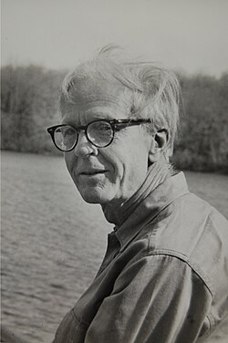
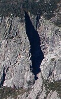

Hassler Whitney | |
|---|---|
 Whitney in 1973 | |
| Born | March 23, 1907 New York City, U.S. |
| Died | May 10, 1989 (aged 82) Princeton, New Jersey, U.S. |
| Alma mater | Yale University (BA, BM) Harvard University (PhD) |
| Known for | |
| Relatives | Dwight family |
| Awards |
|
| Scientific career | |
| Fields | Mathematics |
| Institutions | |
| Thesis | The Coloring of Graphs (1932) |
| George David Birkhoff | |
Doctoral students | |
{kind=link}
Hassler Whitney (March 23, 1907 – May 10, 1989) was an American mathematician. He was one of the founders of singularity theory, and did foundational work in manifolds, embeddings, immersions, characteristic classes and, geometric integration theory.
Biography
Life
Hassler Whitney was born on March 23, 1907, in New York City, where his father, Edward Baldwin Whitney, was the First District New York Supreme Court judge.[1] His mother, A. Josepha Newcomb Whitney, was an artist and political activist.[2] He was the paternal nephew of Connecticut Governor and Chief Justice Simeon E. Baldwin, his paternal grandfather was William Dwight Whitney, professor of Ancient Languages at Yale University, linguist and Sanskrit scholar.[2] Whitney was the great-grandson of Connecticut Governor and US Senator Roger Sherman Baldwin, and the great-great-grandson of American founding father Roger Sherman. His maternal grandparents were astronomer and mathematician Simon Newcomb (1835–1909), a Steeves descendant, and Mary Hassler Newcomb, granddaughter of the first superintendent of the Coast Survey Ferdinand Rudolph Hassler. His great uncle Josiah Whitney was the first to survey Mount Whitney.[3]
He married three times: his first wife was Margaret R. Howell, married on the 30 May 1930. They had three children, James Newcomb, Carol and Marian. After his first divorce, on January 16, 1955, he married Mary Barnett Garfield. He and Mary had two daughters, Sarah Newcomb (later a notable statistician, Sally Thurston), and Emily Baldwin. Finally, Whitney divorced his second wife and married Barbara Floyd Osterman on 8 February 1986.
Whitney and his first wife Margaret made an innovative decision in 1939 that influenced the history of modern architecture in New England, when they commissioned the architect Edwin B. Goodell, Jr. to design a new residence for their family in Weston, Massachusetts. They purchased a rocky hillside site on a historic road, next door to another International Style house by Goodell from several years earlier, designed for Richard and Caroline Field.
{kind=link}

Throughout his life he pursued two particular hobbies with excitement: music and mountain-climbing. An accomplished player of the violin and the viola, Whitney played with the Princeton Musical Amateurs. He would run outside, 6 to 12 miles every other day. As an undergraduate, with his cousin Bradley Gilman, Whitney made the first ascent of the Whitney–Gilman ridge on Cannon Mountain, New Hampshire in 1929. It was the hardest and most famous rock climb in the East. He was a member of the Swiss Alpine Society and the Yale Mountaineering Society (the precursor to the Yale Outdoors Club) and climbed most of the mountain peaks in Switzerland.[4]
Death
Three years after his third marriage, on 10 May 1989, Whitney died in Princeton,[5] after suffering a stroke.[6] In accordance with his wish, Hassler Whitney's ashes rest atop mountain Dent Blanche in Switzerland where Oscar Burlet, another mathematician and member of the Swiss Alpine Club, placed them on August 20, 1989.[7]
Academic career
Whitney attended Yale University, where he received baccalaureate degrees in physics and in music, respectively in 1928 and in 1929.[2] Later, in 1932, he earned a PhD in mathematics at Harvard University.[2] His doctoral dissertation was The Coloring of Graphs, written under the supervision of George David Birkhoff.[8][9] At Harvard, Birkhoff also got him a job as instructor of Mathematics for the years 1930–31,[10] and an Assistant Professorship for the years 1934–35.[11] Later on he held the following working positions: NRC Fellow, Mathematics, 1931–33; Assistant Professor, 1935–40; Associate Professor, 1940–46, Professor, 1946–52; Professor Instructor, Institute for Advanced Study, Princeton University, 1952–77; professor emeritus, 1977–89; Chairman of the Mathematics Panel, National Science Foundation, 1953–56; Exchange Professor, Collège de France, 1957; Memorial Committee, Support of Research in Mathematical Sciences, National Research Council, 1966–67; President, International Commission of Mathematical Instruction, 1979–82; Research Mathematician, National Defense Research Committee, 1943–45; Construction of the School of Mathematics.
He was a member of the National Academy of Sciences; Colloquium Lecturer, American Mathematical Society, 1946; Vice President, 1948–50 and Editor, American Journal of Mathematics, 1944–49; Editor, Mathematical Reviews, 1949–54; Chairman of the Committee vis. lectureship, 1946–51; Committee Summer Instructor, 1953–54;, American Mathematical Society; American National Council Teachers of Mathematics, London Mathematical Society (Honorary), Swiss Mathematics Society (Honorary), Académie des Sciences de Paris (Foreign Associate); New York Academy of Sciences.
Honors
In 1947 he was elected member of the American Philosophical Society.[12] In 1969 he was awarded the Lester R. Ford Award for the paper in two parts "The mathematics of Physical quantities" (1968a, 1968b).[13] In 1976 he was awarded the National Medal of Science. In 1980 he was elected honorary member of the London Mathematical Society.[14] In 1982, he received the Wolf Prize from the Wolf Foundation, and finally, in 1985, he was awarded the Steele Prize from the American Mathematical Society.
Work
Research
Whitney's earliest work, from 1930 to 1933, was on graph theory. Many of his contributions were to graph coloring, and the ultimate computer-assisted solution to the four-color problem relied on some of his results. His work in graph theory culminated in a 1933 paper[15] where he laid the foundations for matroids, a fundamental notion in modern combinatorics and representation theory independently introduced by him and Bartel Leendert van der Waerden in the mid-1930s.[16] In this paper Whitney proved several theorems about the matroid of a graph M(G): one such theorem, now called Whitney's 2-Isomorphism Theorem, states: Given G and H are graphs with no isolated vertices. Then M(G) and M(H) are isomorphic if and only if G and H are 2-isomorphic (a concept previously introduced by Whitney).[17]
Whitney's lifelong interest in geometric properties of functions also began around this time. His earliest work in this subject was on the possibility of extending a function defined on a closed subset of to a function on all of with certain smoothness properties. A complete solution to this problem was found only in 2005 by Charles Fefferman.
In a 1936 paper, Whitney gave a definition of a smooth manifold of class and proved that, for high enough values of r, a smooth manifold of dimension n may be embedded in , and immersed in . (In 1944 he managed to reduce the dimension of the ambient space by 1, provided that n > 2, by a technique that has come to be known as the "Whitney trick".) This basic result shows that manifolds may be treated intrinsically or extrinsically, as we wish. The intrinsic definition had been published only a few years earlier in the work of Oswald Veblen and J. H. C. Whitehead. These theorems opened the way for much more refined studies of embedding, immersion and also smoothing—that is, the possibility of having various smooth structures on a given topological manifold.
He was one of the major developers of cohomology theory and characteristic classes, as these concepts emerged in the late 1930s, and his work on algebraic topology continued into the 1940s. He also returned to the study of functions in the 1940s, continuing his work on the extension problems formulated a decade earlier, and answering a question of Laurent Schwartz in a 1948 paper "On Ideals of Differentiable Functions".
Whitney had, throughout the 1950s, an almost unique interest in the topology of singular spaces and in singularities of smooth maps. An old idea, implicit even in the notion of a simplicial complex, was to study a singular space by decomposing it into smooth pieces (nowadays called "strata"). Whitney was the first to see any subtlety in this definition and pointed out that a good "stratification" should satisfy conditions he termed "A" and "B", now referred to as Whitney conditions. The work of René Thom and John Mather in the 1960s showed that these conditions give a very robust definition of stratified space. The singularities in low dimension of smooth mappings, later to come to prominence in the work of René Thom, were also first studied by Whitney.
In his book Geometric Integration Theory he gives a theoretical basis for Stokes' theorem applied with singularities on the boundary.[18] Later, his work on such topics inspired the research of Jenny Harrison.[19]
These aspects of Whitney's work have looked more unified, in retrospect and with the general development of singularity theory. Whitney's purely topological work (Stiefel–Whitney classes, basic results on vector bundles) entered the mainstream more quickly.
Teaching
In 1967, he became involved full-time in educational problems, especially at the elementary school level. He spent many years in classrooms, both teaching mathematics and observing how it is taught.[20] He spent four months teaching pre-algebra mathematics to a classroom of seventh graders and conducted summer courses for teachers. He traveled widely to lecture on the subject in the United States and abroad. He worked toward removing mathematical anxiety, which he felt leads young pupils to avoid mathematics. Whitney spread the ideas of teaching mathematics to students in ways that relate the content to their own lives as opposed to teaching them rote memorization.
Selected publications
Hassler Whitney published 82 works:[21] all his published articles, included the ones listed in this section and the preface of the book Whitney (1957), are collected in the two volumes Whitney (1992a, pp. xii–xiv) and Whitney (1992b, pp. xii–xiv).
- Whitney, Hassler (January 1932), "Congruent Graphs and the Connectivity of Graphs" (PDF), American Journal of Mathematics, 54 (1): 150–168, doi:10.2307/2371086, hdl:10338.dmlcz/101067, JFM 58.0609.01, JSTOR 2371086, MR 1506881, Zbl 0003.32804.
- Whitney, Hassler (1933), "2-Isomorphic Graphs", American Journal of Mathematics, 55 (1): 245–254, doi:10.2307/2371127, JFM 59.1235.01, JSTOR 2371127, MR 1506961, Zbl 0006.37005.
- Whitney, H. (1957), Geometric Integration Theory, Princeton Mathematical Series, vol. 21, Princeton, NJ and London: Princeton University Press and Oxford University Press, pp. XV+387, MR 0087148, Zbl 0083.28204.
- Whitney, Hassler (1968a), "The Mathematics of Physical Quantities. Part I", The American Mathematical Monthly, 75 (2): 115–138, doi:10.2307/2315883, JSTOR 2315883, MR 0228219, Zbl 0186.57901.
- Whitney, Hassler (1968b), "The Mathematics of Physical Quantities. Part II", The American Mathematical Monthly, 75 (3): 227–256, doi:10.2307/2314953, JSTOR 2314953, MR 0228220, Zbl 0186.57901.
- Whitney, Hassler (1972), Complex analytic varieties, Addison-Wesley Series in Mathematics, Reading-Menlo Park-London-Don Mills: Addison-Wesley, ISBN 0-201-08653-0, MR 0387634, Zbl 0265.32008.
- Whitney, Hassler (1992a), Eells, James; Toledo, Domingo (eds.), The collected papers of Hassler Whitney. Volume I., Contemporary Mathematicians, Basel–Boston–Stuttgart: Birkhäuser Verlag, pp. xiv+590, ISBN 0-8176-3558-0, Zbl 0746.01016.
- Whitney, Hassler (1992b), Eells, James; Toledo, Domingo (eds.), The collected papers of Hassler Whitney. Volume II., Contemporary Mathematicians, Boston–Basel–Berlin: Birkhäuser Verlag, pp. xiv+596, ISBN 0-8176-3559-9, Zbl 0746.01016.
See also
- Loomis–Whitney inequality
- Whitney extension theorem
- Stiefel–Whitney class
- Whitney's conditions A and B
- Whitney embedding theorem
- Whitney graph isomorphism theorem
- Whitney immersion theorem
- Whitney inequality
- Whitney's planarity criterion
- Whitney umbrella
Notes
- ^ Thom (1990, p. 474) and Chern (1994, p. 465).
- ^ a b c d Chern (1994, p. 465)
- ^ According to Chern (1994, p. 465) and Thom (1990, p. 474): Thom cites Josiah Whitney explicitly while Chern simply states that:-"... a great uncle was the first to survey Mount Whitney".
- ^ Fowler (1989).
- ^ Kendig (2013, p. 18) clarifies Princeton, NJ as his correct death place.
- ^ According to Kendig (2013, p. 18). Kendig also writes that him apparently being in good health, the physicians attributed the cause of the stroke to the treatments for prostate cancer he was undergoing.
- ^ The story of his resting place is reported by Chern (1994, p. 467): see also Kendig (2013, p. 18).
- ^ O'Connor, JJ and E F Robertson. "Hassler Whitney". Retrieved 2013-04-16.
- ^ See Kendig (2013, pp. 8–10).
- ^ See (Kendig 2013, p. 9).
- ^ See (Kendig 2013, pp. 9–10).
- ^ See (Chern 1994, p. 465).
- ^ Whitney (1992a, p. xi) and Whitney (1992b, p. xi), section, "Academic Appointments and Awards".
- ^ See the official list of honorary members redacted by Fisher (2012).
- ^ Whitney (1933).
- ^ According to Johnson, Will. "Matroids" (PDF). Retrieved 5 February 2013..
- ^ According to Oxley (1992, pp. 147–153). Graphs G and G' are 2-isomorphic if one can be transformed into the other by applying operations of the following types:
- Vertex identification
- Vertex cleaving
- Twisting.
- ^ See Federer's review (1958).
- ^ Harrison, Jenny (1993), "Stokes' theorem for nonsmooth chains", Bulletin of the American Mathematical Society, New Series, 29 (2): 235–242, arXiv:math/9310231, Bibcode:1993math.....10231H, doi:10.1090/S0273-0979-1993-00429-4, MR 1215309, S2CID 17436511, Zbl 0863.58008,
Much of the vast literature on the integral during the last two centuries concerns extending the class of integrable functions. In contrast, our viewpoint is akin to that taken by Hassler Whitney.
- ^ Hechinger, Fred (10 June 1986). "About Education; Learning Math by Thinking". The New York Times. Retrieved 12 November 2021.
- ^ Complete bibliography in Whitney (1992a, pp. xii–xiv) and Whitney (1992b, pp. xii–xiv).
References
Biographical and general references
- Chern, Shiing-Shen (September 1994), "Hassler Whitney (23 March 1907-10 May 1989)", Proc. Am. Philos. Soc., 138 (3): 464–467, JSTOR 986754.
- Fisher, Elizabeth (9 November 2012), Full list of Honorary Members (PDF), London Mathematical Society, retrieved 14 July 2013.
- Fowler, Glenn (May 12, 1989), "Hassler Whitney, Geometrician; He Eased 'Mathematics Anxiety'", The New York Times, retrieved 9 January 2012.
- Kendig, Keith (August 2013), "Hassler Whitney", Celebratio Mathematica, 2013 (1), retrieved November 27, 2014
- Thom, René (1990), "La vie et l'œuvre de Hassler Whitney", Comptes rendus de l'Académie des sciences. Série générale, La Vie des sciences (in French), 7 (6): 473–476, MR 1105198, Zbl 0722.01025, available from Gallica.
- Hassler, Whitney (1977), "Moscow 1935: Topology Moving Towards America", in Duren, Peter (ed.), A Century of Mathematics in America, Part I (PDF), History of Mathematics, vol. 1, pp. 97–117, ISBN 0-8218-0124-4, MR 1003166, Zbl 0666.01008
Scientific references
- Chirka, Evgeniǐ Mikhaǐlovich (1989), Complex analytic sets, Mathematics and Its Application (Soviet Series), vol. 46, Dordrecht-Boston-London: Kluwer Academic Publishers, doi:10.1007/978-94-009-2366-9, ISBN 0-7923-0234-6, MR 1111477, Zbl 0683.32002.
- Epstein, Marcelo (2004), "Whitney's Geometric Integration and Its Use in Continuum Mechanics", in Capriz, Gianfranco; Grioli, Giuseppe; Magenes, Enrico; Pitteri, Mario; Podio-Guidugli, Paolo (eds.), Whence the Boundary Conditions in Modern Continuum Physics? (Roma 14–16 ottobre 2002), Atti dei Convegni Lincei, vol. 210, Roma: Accademia Nazionale dei Lincei, pp. 127–137, archived from the original on 2011-02-23, retrieved 2016-04-30.
- Federer, Herbert (1958), "Review: Geometric integration theory, by H. Whitney", Bulletin of the American Mathematical Society, 64 (1): 38–41, doi:10.1090/s0002-9904-1958-10143-3.
- Nadis, Steve; Yau, Shing-Tung (2013), "Chapter 4. Analysis and Algebra Meet Topology: Marston Morse, Hassler Whitney, and Saunders Mac Lane", A History in Sum, Cambridge, MA: Harvard University Press, pp. 86–115, doi:10.4159/harvard.9780674726550, ISBN 978-0-674-72500-3, JSTOR j.ctt6wpqft, MR 3100544, Zbl 1290.01005 (e-book: ISBN 978-0-674-72655-0).
- Oxley, James (1992), Matroid Theory, Oxford Graduate Texts in Mathematics, vol. 3, Oxford: The Clarendon Press, Oxford University Press, pp. xii+532, ISBN 0-19-853563-5, MR 1207587, Zbl 0784.05002.
- Shields, Allen (1988), "Differentiable manifolds: Weyl and Whitney", The Mathematical Intelligencer, 10 (2): 5–8, doi:10.1007/bf03028349, MR 0932157, S2CID 189885412, Zbl 0645.01012.
External links
- O'Connor, John J.; Robertson, Edmund F., "Hassler Whitney", MacTutor History of Mathematics Archive, University of St Andrews
- Hassler Whitney Page - Whitney Research Group
- Interview with Hassler Whitney about his experiences at Princeton
- Hassler Whitney — The First Century of the International Commission on Mathematical Instruction
- INFORMS: Biography of Hassler Whitney from the Institute for Operations Research and the Management Sciences